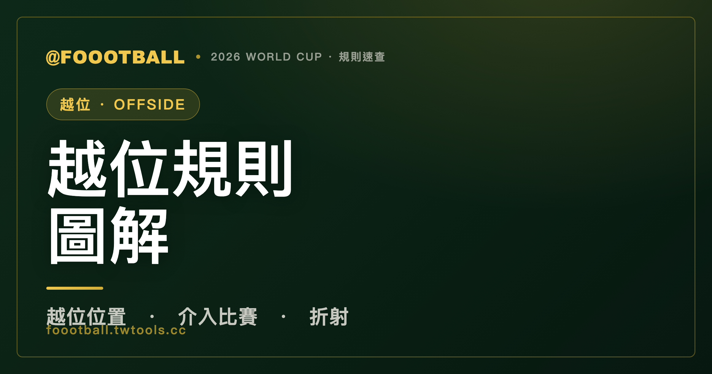

越位規則圖解：站在越位位置不一定犯規，關鍵在這三件事
越位看的是『傳球出腳的那一瞬間』：進攻球員若比球、又比倒數第二名防守球員更靠近對方球門線（且在對方半場），就處於越位位置。但站在越位位置本身不犯規——只有當他『介入比賽』（碰球、干擾對手、或從中得利）時才算越位犯規。

越位（offside，足球規則第 11 條）大概是足球裡最常被吵、也最常被誤解的規則。最大的誤會是「站在越位位置就是犯規」——其實不是。這篇用最白話的方式，把「什麼是越位位置」「什麼時候才算犯規」「最容易吵架的折射問題」拆開講清楚。
第一件事：什麼是「越位位置」
判斷越位，看的永遠是隊友傳球、出腳碰到球的那一瞬間（不是接到球的瞬間）。在那一刻，一名進攻球員如果同時滿足：
- 在對方的半場，而且
- 比球更靠近對方球門線，而且
- 比倒數第二名防守球員更靠近對方球門線（通常是最後一名後衛，因為門將多半是最後一人）
就處於越位位置（offside position）。
要注意是「倒數第二名」防守球員，不是「最後一名」——因為門將通常站最後，真正畫出越位線的，往往是最後一名後衛。和球平行、或和倒數第二名防守者平行，都不算越位位置。
第二件事：站在越位位置，不等於犯規
這是整條規則的核心，也是最多人搞錯的地方：處於越位位置本身，不是犯規。
只有當這名球員在越位位置、又在傳球瞬間之後實際「介入比賽」，才構成越位犯規。「介入比賽」分三種：
| 介入方式 | 說明 |
|---|---|
| 干擾比賽 | 碰到、或踢到隊友傳來的球 |
| 干擾對手 | 擋住對手視線、妨礙對手移動或搶球，影響對手處理球的能力 |
| 從越位位置得利 | 碰到彈出、折射、或被擋出的球而得利 |
所以你常看到一名球員明明站在越位位置，但他沒去碰球、也沒干擾任何人，比賽就繼續進行——那是正確的，因為他沒有「介入比賽」。越位是「位置 ＋ 介入」兩個條件都成立才吹。
第三件事：最會吵架的「故意觸球 vs 折射」
實務上最容易引發爭議的，是球碰到防守球員之後、再落到越位位置進攻球員腳下的情況。關鍵看防守球員是「故意觸球」還是「折射 / 擋出」：
- 防守球員「故意觸球」：例如後衛清楚看到球、有時間有空間地把球處理出去（哪怕沒處理好），這時原本在越位位置的進攻球員會被重置為不越位，可以合法接球。
- 只是「折射、反彈」，或任何「撲救」：球只是打到防守球員身上彈開，不算重置；要特別注意——就算門將（或防守者）是刻意做出撲救動作，IFAB 也明確把「撲救」排除在重置之外，原本的越位犯規仍然成立。
IFAB 為了讓這條線更清楚，列出了判斷「故意觸球」的幾個指標：球從遠處飛來、防守者看得清楚、球速度不快、球的方向不出乎意料、防守者有時間協調身體動作——越符合這些，越算「故意觸球」；反之若是本能的伸腳、跳起、或勉強碰到，比較算折射。
此外，2025/26 球季起 IFAB 還補充釐清：當門將用手把球擲出時，以「最後觸球點」來判斷越位位置。這類細節持續在修，目的都是把「重置 vs 不重置」的灰色地帶縮小。
半自動越位技術讓判罰更快
2026 世界盃採用升級版的半自動越位技術（SAOT），用多機位追蹤球員肢體與球的位置，自動算出越位線。和過去相比，2026 把清楚的越位直接通知場上裁判（而非先繞 VAR），偵測到明確越位時對裁判耳機發出音訊提示，大幅縮短了「停下來畫線」的等待。技術細節在〈VAR 完整指南〉那篇。
要提醒的是：科技加快的是「畫線、算位置」這種客觀部分。但「防守者到底是故意觸球還是折射」這種主觀判斷，仍然要靠裁判的眼睛——這也是為什麼有了半自動技術，越位爭議還是不會消失。
一句話總結
越位看傳球出腳的瞬間：在對方半場、比球和倒數第二名防守者更接近球門線＝越位位置。但站在越位位置不犯規，要「介入比賽」（碰球/干擾對手/得利）才算。最會吵的是「故意觸球（重置不越位）vs 折射（仍越位）」。
常見問題
站在越位位置就是犯規嗎？
不是。處於越位位置本身不犯規。只有當這名球員實際「介入比賽」——碰到球、干擾對手、或從越位位置得利——才構成越位犯規。沒去碰球也沒干擾任何人，就不吹。
越位線是看最後一名防守球員嗎？
是看「倒數第二名」防守球員。因為門將通常站在最後一人，真正畫出越位線的往往是最後一名後衛。和倒數第二名防守者平行不算越位。
越位是看傳球還是接球的瞬間？
看「隊友傳球、出腳碰到球的那一瞬間」進攻球員的位置，不是他接到球的瞬間。這是判斷越位的時間基準點。
球碰到防守球員再傳到越位球員腳下，算越位嗎？
要看防守球員是「故意觸球」還是「折射」。若防守者是清楚看到球、有時間地故意把球處理出去，原本越位的進攻球員會被重置為不越位；若只是球打到身上彈開、或被迫撲擋的折射，原本的越位犯規仍然成立。
有了半自動越位技術，還會有越位爭議嗎？
還是會。半自動技術加快的是「畫線、算位置」這類客觀部分，但「防守者是故意觸球還是折射」屬於主觀判斷，仍要靠裁判判定，所以爭議不會完全消失。
資料來源：IFAB 足球規則（Laws of the Game）第 11 條越位、IFAB 2025/26 規則更新與「故意觸球」釐清指引、FIFA 2026 World Cup 判罰科技說明。本站為非官方球迷資訊整理。延伸閱讀：VAR 完整指南、2026 世界盃賽制全解。